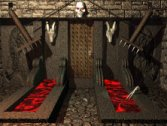
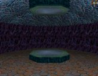
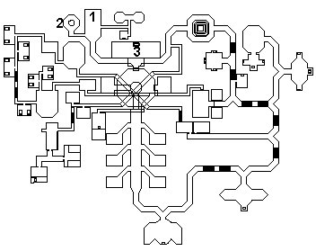

| 1. | Entrance |
| 2. | Portal to Free Haven Sewere |
| 3. | Memory Crystal Alpha, you can also see Slicker Silvertounge here. |
This one is really quite easy, getting here is the hard part. There are some clerics, some devils, and a few fire elementals.
Leave us a message at: mgrounds@hotmail.com